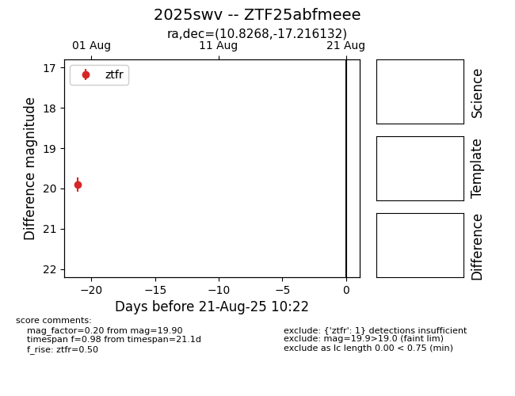

Target 2025swv at 2025-08-21 11:20, see:
FINK: fink-portal.org/ZTF25abfmeee
Lasair: lasair-ztf.lsst.ac.uk/objects/ZTF25abfmeee
ALeRCE: alerce.online/object/ZTF25abfmeee
TNS: wis-tns.org/object/2025swv
YSE: ziggy.ucolick.org/yse/transient_detail/2025swv
alt names
ZTF25abfmeee (ztf,alerce)
2025swv (tns,yse)
coordinates:
equatorial (ra, dec) = (10.8268,-17.21613)
galactic (l, b) = (111.7798,-79.91138)
photometry
last ztfr=19.90
1 ztfr detections
